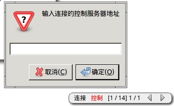

AceSlide 使用 HTML 的演示文档工具
- 2012-03-25 23:36
- 邹业盛 / yeshengzou # # gmail.com
关于
AceSlide 是一个使用 HTML 来制作演示文档的工具。它使用 javascript 来控制 dom 元素，以实现类似 LaTeX 中 Beamer 的效果。
目前， AceSlide 托管在 github 上：
https://github.com/AceFantasy/AceSlide
你可以在 http://zouyesheng.sinaapp.com/static/AceSlide/slide.html 查看一个 Demo
一份演示文档的源码类似于下面这个样子：（当然，实际使用中，还需要加载一些必要的 js 和 css 文件，以及做一些初始化的工作）
缘起
会想到要做这么一个东西，是源于自己想使用一种更简单直接的方式来制作演示文档的需求。
提到演示文档，可能大部分人会想到微软 Office 中的 PowerPoint ，不过，我不会用那玩意儿，我打开它我都不知道如何开始。我对演示文档的映像都是来自于 Beamer 的，我觉得 Beamer 做出来的文档，很规范，很漂亮。 你可以在 这里 看看 Beamer 源码中给出的示例。
Beamer 的规范，漂亮是与 LaTeX 的风格一脉相承的。于是同样的，你需要以 LaTeX 的并不简单的语法来书写文档，更大的问题是，规范的代价就是并不容易随意修改它，特别是很多的细节之处。在我看来，做演示文档大部分时候并不像写一本书，不需要定义一套严格的规则来约束自己，应该以尽量自然，直接的方式把自己的想法表现出来，就像是手中拿着一支笔在白板上绘图一样。从这个观点上来说， PowerPoint 的方式是更友好的。（我想我不会用它的原因和我不会用 IDE 的原因一样吧）
我曾经也在 Beamer 上做过演示文档，过程倒是没有什么困难，但是结果并不让我满意。我必须直接地使用很 dirty 的方法去实现我想要的布局。同时在排版高亮代码时，使用 listings 包也不是很方便，而我主要需要“额外”做的事就是排代码（ PowerPoint 怎么说这事？）。与此相对的，我并不需要排数学公式，至少现阶段不需要。
所以，我就在考虑以一种更简单，直观的方式来做演示文档。很自然地，想到了 HTML 。曾经在 Google 的开发者大会上，见演讲者运用 HTML5 实现了一套“多媒体”化的演示，效果很棒。这足以说明 HTML 的表现力是足够并且大有潜力的。所以，我就试着用 HTML 来写一份演示文档。
使用 js 来控制 frame 的切换是很容易做的到的事，但是要渲染整套文档，并且实现 Beamer 中的 item “顺序可指定”这个在我看来必须要实现的功能，却需要多做一点功夫。当然，最后实现出来，回过头去看并不复杂。
技术细节
基本的 frame 切换
前面说过了，实现 frame 的切换控制是很容易的，只需要把页面中的所有带 class=frame 的节点找出来，然后先全部隐藏，再控制指定的节点显示就可以了。
像这样，一个 div[class="frame"] 就是一页。
frame 内的顺序显示
第二个要解决的问题，就是在 frame 内，相关节点也不是一次性全部显示出来的。比如：
这里的 1,2,3 显然应该是可以依次显示才对。于是，在 frame 之下，我们还需要定义一串 overlay_node ，每一页 frame ，都包括了一个序列的 overlay_node。
要得到 overlay_node 序列，实际上就是得到 div 的所有子节点，递归遍历就可以了。
指定 overlay_node 的显示顺序
顺序的节点，在演示当然，我们可能并不希望是一个顺序的显示，比如对于：
我们可能希望以 1,3,2 的顺序来显示，像在 Beamer 中一样， item 的顺序是可以指定的，于是，我使用 tabindex 来标记节点在哪些“帧”是显示的：
要实现这个功能，只需要在上一步之前，做一些“预处理”即可。
上一步提到的遍历子节点的过程，实际上是在 frame 的范围内，确定元素的 tabindex 量的过程，已经明确指定的，不管，如果没有明确指定，则系统要按一个默认的顺序来自动分配。
当所有的节点的 tabindex 量都就绪之后，就可以直接拿到全部节点，然后按 tabindex 构造一个两个维度的序列。
远程控制
依靠浏览器的环境，可以很容易使用一个 Server / Client 式的分布控制系统。这样，就可以实现在演讲时，别人可以在自己的笔记本上看你的演示文档，并且与演讲者的演示文档同步。同时，也可以在服务器端的支持下实现更多的功能，比如即时的互动交流等。使用 long-polling 的方式这很容易做到，而且还可以跨域。
我现在实现的一个初始模型是，本机打开一个演示文档，就可以连接到任意的一个控制端（作为“控制”/“被控制”的角色），然后和控制端同步。

稍微扩展一点，可以使用手机的浏览器来作控制。当然，因为现在手机的浏览器不是那么给力，所以，在服务器端专门给手机做控制页面比较好。之后，就是手机直接访问控制页面的 URL 就可以了。这意味着，在有 Wifi 的环境下，你可以拿着手机走下演讲台了。当然，随便把讲义也放入手机不挺好么。大屏幕上显示的演示文档，你通过手机就可以控制翻页，或者其它更多的功能，随意。
未解决的问题
用 HTML 来做演示文档，现在最大的一个问题，就是没有办法去自适应显示屏幕的大小。不像 PDF 文档，可以随意的放大缩小。现在的 AceSlide 默认是根据 1024x768 的尺寸来设置的。而这个问题，在我看来也是在纯 HTML 的范畴下无法解决的一个问题。好在，这个问题一般倒不会影响使用。所以，下一步，我会看看，完全使用 canvas 以全矢量化的元素来构建文档是否可以得到更好的效果。